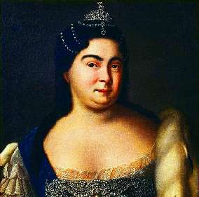

Борис Акунин
Мой календарь
Причем не сказочной, а исторической. В этот день в 1684 году родилась девочка, которой была уготована фантастическая судьба, по сравнению с которой приключения Синдиреллы кажутся пресными. У той, в конце концов, был батюшка, да и замуж она вышла всего лишь за принца, а стала ли королевой, неизвестно.
Марта Скавронская была круглая сирота, выросла в бедности, грязной работой занималась не из-за злой мачехи, а чтобы не умереть с голоду - в юности была служанкой.
А потом случилась беда - на латвийский городок Мариенбург, где обитала замарашка, напали враги, и угнали девушку в плен, и обращались с ней как с военным трофеем. Ну а какой у этой сказки финал, мы знаем.
Екатерина (как ее окрестили при переходе в православие) стала не только супругой великого императора, но после его смерти и правящей императрицей - первой в российской истории.
При этом красавицей она отнюдь не являлась, туфельки носила немаленького размера (была дамой крупной), государственным умом не блистала, даже грамоте так и не выучилась.
Но, знаете, если девушка прелестна и мила, вывести ее в принцессы - волшебство невеликое. Чепуха эта ваша сказка про Золушку, вот наша Екатерина - это действительно всем чудам чудо.
Сегодня ждите фею Мелюзину. Есть шанс, что она вас посетит.